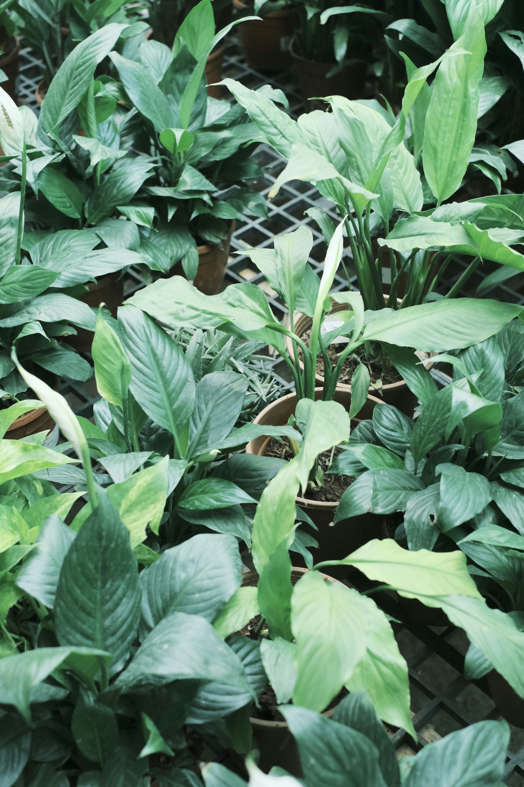
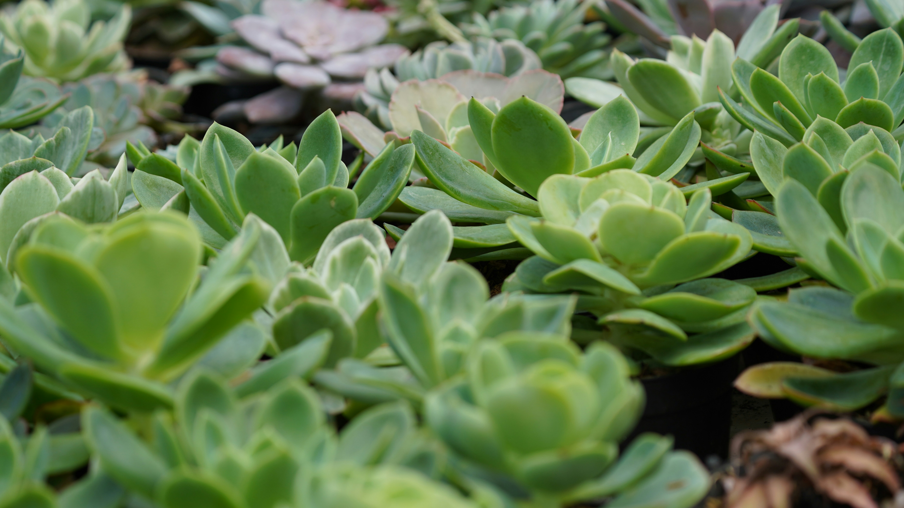

Plantas que aguantan tu ritmo de vida
Más de 200 especies de interior y exterior, con la ficha de cuidados de cada una. Elegí por luz, por riego o por lo que te guste mirar.
Elegí por dónde vas a ponerla
Tres familias que cubren casi cualquier rincón: el living con poca luz, el balcón que se lleva todo el sol y el escritorio

Un vivero, no un depósito
Cultivamos en Escobar desde 1998. Cada planta que sale de acá pasó por nuestras manos y tiene una ficha con lo que necesita para no morirse en dos semanas.
- Asesoramiento antes y después de la compra
- Envíos a todo el AMBA en 48 horas
- Reposición si la planta llega dañada
¿Trabajás en el vivero?
Entrá con tu cuenta para cargar plantas, actualizar precios y controlar el stock.